# {{<video >}}02wk-1: 객체지향적 시각화 (2), Subplot, 산점도 응용예제1-3
matplotlib

1. 강의영상
2. Imports
import matplotlib.pyplot as plt
import numpy as np
import matplotlib
matplotlib.rcParams['figure.figsize'] = (3, 2)
matplotlib.rcParams['figure.dpi'] = 1503. 객체지향적 시각화 (2)
A. 예비학습
# 예비학습1 – 그림을 저장했다가 꺼내보고 싶다.
- 그림을 그리고 저장하자.
plt.plot([1,2,4,3])
fig = plt.gcf()
- 다른그림을 그려보자.
plt.plot([1,2,4,3],'--o')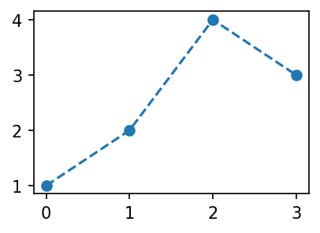
- 저장한 그림은 언제든지 꺼내볼 수 있음
fig
#
# 예비학습2 – fig 는 뭐야?
#fig??
type(fig)matplotlib.figure.FigureFigure라는 클래스에서 찍힌 인스턴스
- 여러가지 값, 기능이 저장되어 있겠음.
fig.axes[<Axes: >]ax = fig.axes[0]yaxis= ax.yaxis
xaxis= ax.xaxislines = ax.get_lines()
line = lines[0]- 계층구조: Figure \(\supset\) [Axes,…] \(\supset\) YAxis, XAxis, [Line2D,…]
type(fig)matplotlib.figure.Figure1. .axes 로 Axes 를 끄집어냄
ax = fig.axes[0]
type(ax)matplotlib.axes._axes.Axes2. .xaxis, .yaxis 로 Axis 를 끄집어냄
yaxis = ax.yaxis
xaxis = ax.xaxis
type(yaxis), type(xaxis)(matplotlib.axis.YAxis, matplotlib.axis.XAxis)3. .get_lines()로 Line2D를 끄집어냄
lines = ax.get_lines()
line=lines[0]
type(line)matplotlib.lines.Line2D- 오브젝트내용 확인 (그닥 필요 없음)
line.properties()['data'](array([0., 1., 2., 3.]), array([1, 2, 4, 3]))- matplotlib의 설명
ref: https://matplotlib.org/stable/gallery/showcase/anatomy.html#sphx-glr-gallery-showcase-anatomy-py

B. plt.plot 쓰지 않고 그림그리기
- 개념:
- Figure(fig): 도화지
- Axes(ax): 도화지에 존재하는 그림틀
- Axis, Lines: 그림틀 위에 올려지는 물체(object)
- 목표: 아래와 똑같은 그림을 plt.plot()을 쓰지 않고 만든다.
plt.plot([1,2,3,2],'--o')
Figure
fig2 = plt.Figure() - 클래스를 모른다면:
plt.Figure()는 도화지를 만드는 함수라 생각할 수 있음 - 클래스문법에 익숙하다면: 이 과정은 사실 클래스 -> 인스턴스의 과정임 (
plt라는 모듈안에Figure라는 클래스가 있는데, 그 클래스에서 인스턴스를 만드는 과정임)
fig2<Figure size 450x300 with 0 Axes>fig1과는 다르게fig2를 출력하면 아무것도 없음.
Axes
ax2 = fig2.add_axes([0.125, 0.11, 0.775, 0.77])fig2.add_axes는 fig2에 소속된 함수이며, 도화지에서 그림틀을 ‘추가하는’ 함수이다.
fig2
- 이제 fig2라는 이름의 도화지에는 추가된 그림틀이 보인다.
Axes 조정
ax2.set_xlim([-0.15, 3.15])
ax2.set_ylim([0.9, 3.1])(0.9, 3.1)fig2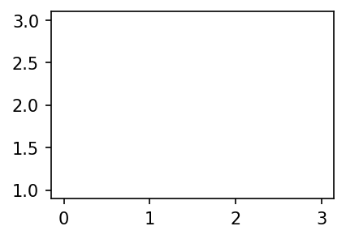
Lines
-
line2 = matplotlib.lines.Line2D(
xdata=[0,1,2,3],
ydata=[1,2,3,2],
linestyle='--',
marker='o'
)ax2.add_line(line2)<matplotlib.lines.Line2D at 0x7facf01b2510>fig
fig2
다른방법들
- 조금 다른 방법: Line2d 오브젝트를 쓰지 않는 방법
fig3 = plt.Figure()
ax3 = fig3.add_axes([0.125, 0.11, 0.775, 0.77])
ax3.plot([1,2,3,2],'--o')
fig3
- 조금 다른 방법 (2): add_axes()를 쓰지 않는 방법
fig4 = plt.Figure()
ax4 = fig4.subplots()
ax4.plot([1,2,3,2],'--o')
fig4
_fig = plt.Figure()
_fig.subplot(111)AttributeError: 'Figure' object has no attribute 'subplot'- 좀 더 다른 방법 (3)
fig5, ax5 = plt.subplots(1)
ax5.plot([1,2,3,2],'--o')
C. 정리 (\(\star\star\star\))
- 결국 아래는 모두 같은 코드이다.
## 코드1
plt.plot([1,2,3,2],'--o')
## 코드2
fig,ax = plt.subplots()
ax.plot([1,2,3,2],'--o')
## 코드3
fig = plt.Figure()
ax = fig.subplots()
ax.plot([1,2,3,2],'--o')
fig
## 코드4
fig = plt.Figure()
ax = fig.add_axes([0.125, 0.11, 0.775, 0.77])
ax.plot([1,2,3,2],'--o')
fig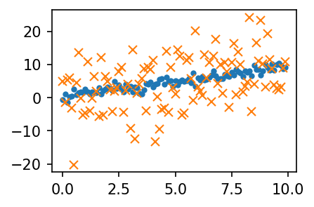
## 코드5
fig = plt.Figure()
ax = fig.add_axes([0.125, 0.11, 0.775, 0.77])
ax.set_xlim([-0.15, 3.15])
ax.set_ylim([0.9, 3.1])
line = matplotlib.lines.Line2D(
xdata=[0,1,2,3],
ydata=[1,2,3,2],
linestyle='--',
marker='o'
)
ax.add_line(line)
fig
D. 미니맵
- 틀잡기
fig = plt.Figure()
ax1 = fig.add_axes([0,0,2,2])
ax3 = fig.add_axes([1.4,0.2,0.5,0.5])
fig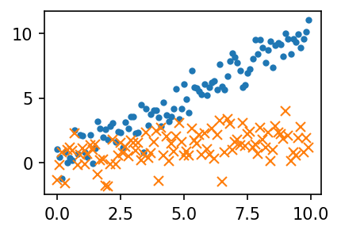
ax1.plot([1,5,3,4],'--o')
ax3.plot([1,2,3,1],'--or')
fig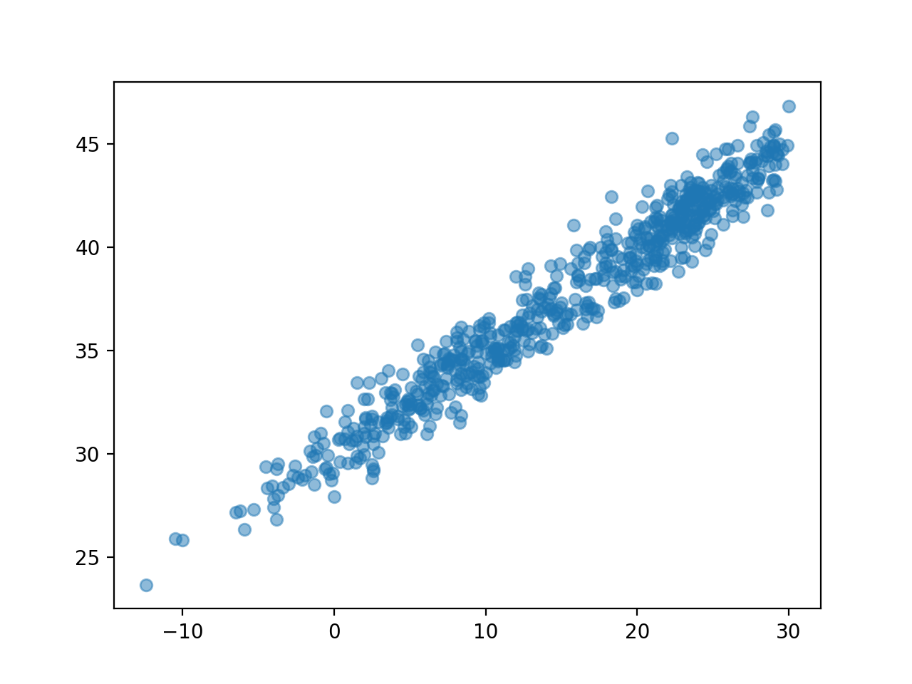
4. Subplot
- 예시1
# fig, axs = plt.subplots(2)
fig, (ax1,ax2) = plt.subplots(2,figsize=(4,4))
ax1.plot([1,2,3,2],'--r')
ax2.plot([1,2,4,3],'--o')
fig.tight_layout()
# plt.tight_layout()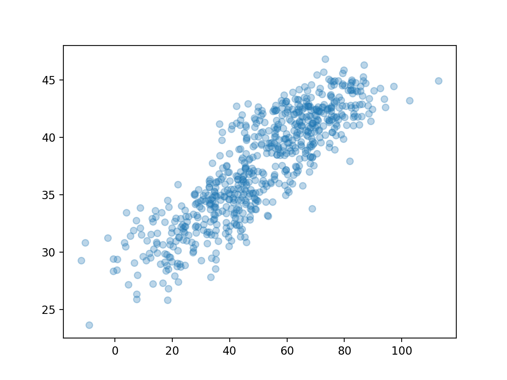
- 예시2
fig, ((ax1,ax2),(ax3,ax4)) = plt.subplots(2,2, figsize=(4,4))
ax1.plot([1,2,4,3],'o', color='C0')
ax2.plot([1,2,4,3],'o', color='C1')
ax3.plot([1,2,4,3],'o', color='C2')
ax4.plot([1,2,4,3],'o', color='C3')
fig.tight_layout()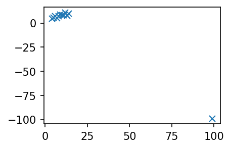
5. 산점도 응용예제1 – 표본상관계수
A. motivating EX
- 아래와 같은 자료를 수집하였다고 하자.
- 몸무게 = [44,48,49,58,62,68,69,70,76,79]
- 키 = [159,160,162,165,167,162,165,175,165,172]
x=[44,48,49,58,62,68,69,70,76,79]
y=[159,160,162,165,167,162,165,175,165,172]plt.plot(x,y,'o')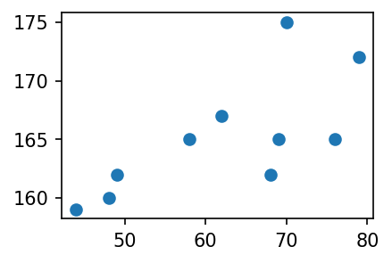
- 키가 큰 사람일수록 몸무게도 많이 나간다. (반대도 성립)
- 키와 몸무게는 관계가 있어보인다. (정비례)
- 얼만큼 정비례인지?
- 이 질문에 대답하기 위해서는 상관계수의 개념을 알아야 한다.
- 상관계수는 산점도의 해석에서 가장 중요한 개념 중 하나.
B. 예비학습 – 상관계수
- (표본)상관계수
\[r=\frac{\sum_{i=1}^{n}(x_i-\bar{x})(y_i-\bar{y}) }{\sqrt{\sum_{i=1}^{n}(x_i-\bar{x})^2\sum_{i=1}^{n}(y_i-\bar{y})^2 }}=\sum_{i=1}^{n}\tilde{x}_i\tilde{y}_i \]
- 단, \(\tilde{x}_i=\frac{(x_i-\bar{x})}{\sqrt{\sum_{i=1}^n(x_i-\bar{x})^2}}\), \(\tilde{y}_i=\frac{(y_i-\bar{y})}{\sqrt{\sum_{i=1}^n(y_i-\bar{y})^2}}\)
- 상관계수를 계산하는 방법
(원래자료)
x,y([44, 48, 49, 58, 62, 68, 69, 70, 76, 79],
[159, 160, 162, 165, 167, 162, 165, 175, 165, 172])(평균을 0으로)
xx = x-np.mean(x)
yy = y-np.mean(y) (퍼진정도를 표준화)
xxx = xx/np.sqrt(np.sum(xx**2))
yyy = yy/np.sqrt(np.sum(yy**2))(xxx*yyy).sum()0.7138620583559141- 상관계수를 계산하는 방법2
np.corrcoef(x,y)array([[1. , 0.71386206],
[0.71386206, 1. ]])- 상관계수의 성질: 절대값이 1보다 작다.
C. 산점도를 보고 상관계수의 부호를 해석
- 질문: 아래의 그림은 상관계수 \(r\)의 값이 양수인가 음수인가?
plt.plot(x,y,'o')
- 차근차근 따져보자.
fig, (ax1,ax2,ax3) = plt.subplots(1,3,figsize=(10,3))
ax1.plot(x,y,'o'); ax1.set_title(r'$(x_i,y_i)$')
ax2.plot(xx,yy,'o'); ax2.set_title(r'$(x_i-\bar{x},y_i-\bar{y})$')
ax3.plot(xxx,yyy,'o'); ax3.set_title(r'$(\tilde{x}_i,\tilde{y}_i)$')Text(0.5, 1.0, '$(\\tilde{x}_i,\\tilde{y}_i)$')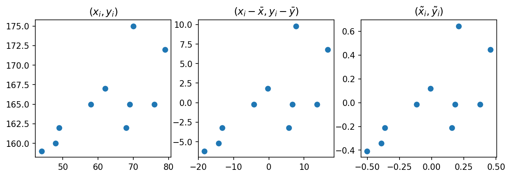
- \(\tilde{x}_i\), \(\tilde{y}_i\) 를 곱한값이 양수인것과 음수인것을 체크해보자.
- 양수인쪽이 많은지 음수인쪽이 많은지 생각해보자.
- \(r=\sum_{i=1}^{n}\tilde{x}_i \tilde{y}_i\) 의 부호는?
- 그림을 보고 상관계수의 부호를 알아내는 방법? \((x_i,y_i)\)의 산점도를 보고 \((\tilde{x}_i, \tilde{y}_i)\) 의 산점도를 상상 \(\to\) 1,3 분면에 점들이 많으면 양수, 2,4 분면에 점들이 많으면 음수
D. 산점도를 보고 상관계수의 절대값을 해석
# 예제1 – 기울기가 동일, 그렇지만 직선근처의 퍼짐이 다른 경우
- 자료가 아래와 같다고 하자.
x=np.arange(0,10,0.1)
y1=x+np.random.normal(loc=0,scale=1.0,size=len(x))
y2=x+np.random.normal(loc=0,scale=7.0,size=len(x))plt.plot(x,y1,'.')
plt.plot(x,y2,'x')
- \((x_i,y_i)\)의 그래프와 \((\tilde{x}_i,\tilde{y}_i)\)의 그래프를 그려보자.
def tilde(x):
xx = x-np.mean(x)
xxx = xx / np.sqrt(np.sum(xx**2))
return xxx fig, (ax1,ax2) = plt.subplots(1,2,figsize=(4,2))
ax1.plot(x,y1,'.'); ax1.plot(x,y2,'x'); ax1.set_title(r'$(x_i,y_i)$')
ax2.plot(tilde(x),tilde(y1),'.'); ax2.plot(tilde(x),tilde(y2),'x'); ax2.set_title(r'$(\tilde{x}_i,\tilde{y}_i)$')
fig.tight_layout()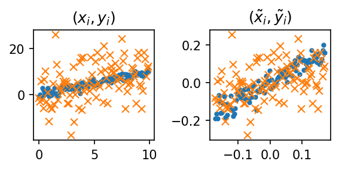
#
# 예제2 – 직선근처의 퍼짐은 동일하지만, 직선의 기울기가 다른 경우
- 자료가 아래와 같다고 하자.
x=np.arange(0,10,0.1)
y1=x+np.random.normal(loc=0,scale=1.0,size=len(x))
y2=0.2*x+np.random.normal(loc=0,scale=1.0,size=len(x))plt.plot(x,y1,'.')
plt.plot(x,y2,'x')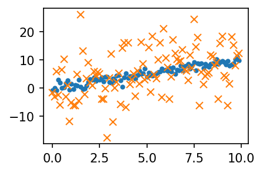
- \((x_i,y_i)\)의 그래프와 \((\tilde{x}_i,\tilde{y}_i)\)의 그래프를 그려보자.
def tilde(x):
xx = x-np.mean(x)
xxx = xx / np.sqrt(np.sum(xx**2))
return xxx fig, (ax1,ax2) = plt.subplots(1,2,figsize=(4,2))
ax1.plot(x,y1,'.'); ax1.plot(x,y2,'x'); ax1.set_title(r'$(x_i,y_i)$')
ax2.plot(tilde(x),tilde(y1),'.'); ax2.plot(tilde(x),tilde(y2),'x'); ax2.set_title(r'$(\tilde{x}_i,\tilde{y}_i)$')
fig.tight_layout()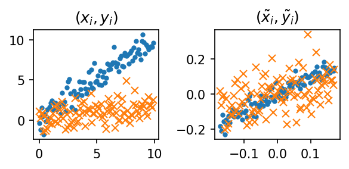
#
6. 산점도 응용예제2 – 앤스콤의 4분할
- Anscombe’s quartet: 교과서에 나오는 그림임.
- 교훈1: 데이터를 분석하기 전에 항상 시각화를 하라.
x1 = [10, 8, 13, 9, 11, 14, 6, 4, 12, 7, 5]
y1 = [8.04, 6.95, 7.58, 8.81, 8.33, 9.96, 7.24, 4.26, 10.84, 4.82, 5.68]
x2 = x1
y2 = [9.14, 8.14, 8.74, 8.77, 9.26, 8.10, 6.13, 3.10, 9.13, 7.26, 4.74]
x3 = x1
y3 = [7.46, 6.77, 12.74, 7.11, 7.81, 8.84, 6.08, 5.39, 8.15, 6.42, 5.73]
x4 = [8, 8, 8, 8, 8, 8, 8, 19, 8, 8, 8]
y4 = [6.58, 5.76, 7.71, 8.84, 8.47, 7.04, 5.25, 12.50, 5.56, 7.91, 6.89]fig, ((ax1,ax2),(ax3,ax4)) = plt.subplots(2,2,figsize=(6,4))
ax1.plot(x1,y1,'o'); ax1.set_title(f'corrcoef = {np.corrcoef(x1,y1)[0,1] : .6f}')
ax2.plot(x2,y2,'o'); ax2.set_title(f'corrcoef = {np.corrcoef(x2,y2)[0,1] : .6f}')
ax3.plot(x3,y3,'o'); ax3.set_title(f'corrcoef = {np.corrcoef(x3,y3)[0,1] : .6f}')
ax4.plot(x4,y4,'o'); ax4.set_title(f'corrcoef = {np.corrcoef(x4,y4)[0,1] : .6f}')
fig.tight_layout()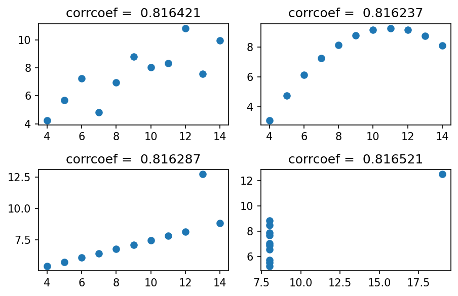
- 앤스콤플랏의 4개의 그림은 모두 같은 상관계수를 가진다. \(\to\) 하지만 4개의 그림은 느낌이 전혀 다르다.
- 같은 표본상관계수를 가진다고 하여 같은 관계성을 가지는 것은 아니다. 표본상관계수는 x,y의 비례정도를 측정하는데 그 값이 1에 가깝다고 하여 꼭 정비례의 관계가 있음을 의미하는게 아니다. \((x_i,y_i)\)의 산점도가 선형성을 보일때만 “표본상관계수가 1에 가까우므로 정비례의 관계에 있다” 라는 논리전개가 성립한다.
- 앤스콤의 1번째 플랏: 산점도가 선형 \(\to\) 표본상관계수가 0.816 = 정비례의 관계가 0.816 정도
- 앤스콤의 2번째 플랏: 산점도가 선형이 아님 \(\to\) 표본상관계수가 크게 의미없음
- 앤스콤의 3번째 플랏: 산점도가 선형인듯 보이나 하나의 이상치가 있음 \(\to\) 하나의 이상치가 표본상관계수의 값을 무너뜨릴 수 있으므로 표본상관계수값을 신뢰할 수 없음.
- 앤스콤의 4번째 플랏: 산점도를 그려보니 이상한 그림 \(\to\) 표존상관계수를 계산할수는 있음. 그런데 그게 무슨 의미가 있을지?
# 예제 – 하나의 이상치가 상관계수를 무너뜨리는 경우
- 아래와 같이 앤스콤의 첫번째 플랏을 다시 그려보자.
plt.plot(x1,y1,'x')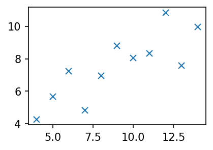
- 하나의 점을 추가하여 이 상관계수 값을 -1에 가깝게 만들 수 있다.
plt.plot(x1+[99],y1+[-99],'x')
np.corrcoef(x1+[99],y1+[-99])array([[ 1. , -0.98450679],
[-0.98450679, 1. ]])#
- 교훈2: 상관계수를 해석하기에 앞서서 산점도가 선형성을 보이는지 체크할 것! 항상 통계학과에서 배우는 통계량 (혹은 논리전개)는 적절한 가정하에서만 말이된다는 사실을 기억할 것!
7. 산점도 응용예제3 – 무상관은 관계가 없다는 뜻?
# 예제 – 관계는 있지만 상관관계는 없는 경우
np.random.seed(43052)
x=np.linspace(-1,1,100,endpoint=True)
y=x**2+np.random.normal(scale=0.1,size=100)plt.plot(x,y,'.')
plt.title(f'corrcoef = {np.corrcoef(x,y)[0,1] :.6f}')Text(0.5, 1.0, 'corrcoef = 0.006887')
#
자연어와 수학용어를 잘 구분할 것
8. HW
1. 아래와 같은 그림을 그려라.
x,y = [1,2,3,4], [1,2,4,3] #